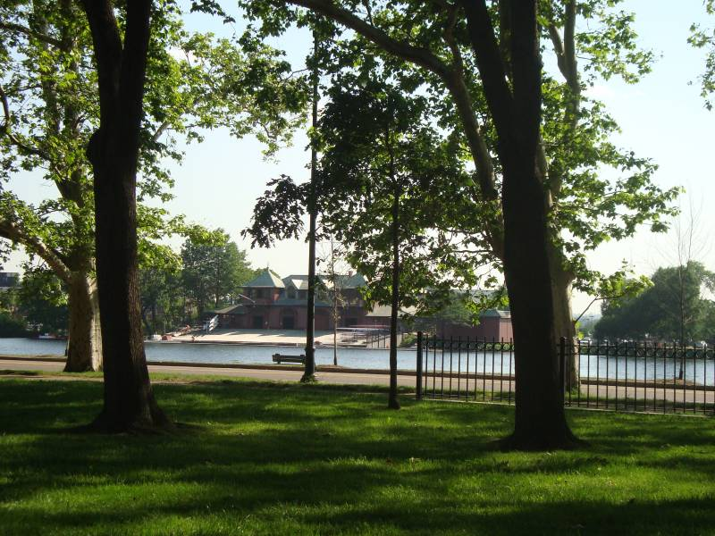
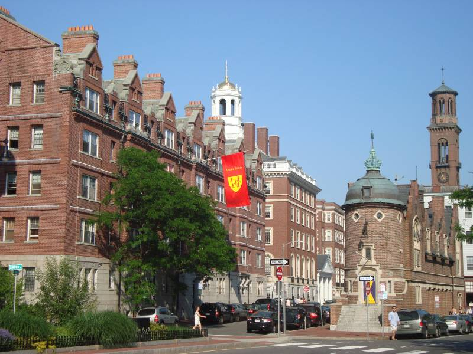

Ani ve středu nás na Harvardu nenechají odpočinout, promoce vesele pokračují už druhý den, neslýchané :D. Tentokrát program probíhá už od dopoledne - zahájen je piknikem na hlavním yardu, kde nám brácha představí Danielovu maminku. S ní a s Maríinými rodiči strávíme čas až do oběda a snažíme se konverzovat. Taťka vybaluje ruštinu, ale ukáže se, že na tu se Bulhaři moc nechytají :D, takže se domlouváme každý svým slovanským jazykem občas proloženým angličtinou a vlastně si docela rozumíme :-). Stejně jako my i oni jsou v USA poprvé, ale narozdíl od nás už stihli navštívit Boston, a tak nám doporučí pár muzejí, která stojí za vidění. Po pikniku se přemístíme stejně jako včera ke kostelu, kde probíhají proslovy studentů a vedoucích kolejí a udělují se tam nějaká ocenění. Zpočátku se zájmem poslouchám, ale brzo mě začne přemáhat vedro a únava, takže už si přeju, aby to hlavně proboha brzo skončilo. Na odpolední program se za námi staví i Ján, který totožný problém s únavou vyřeší tak, že se prostě natáhne přes 5 židliček vedle sebe a zalomí to :D…Kolem půl páté už je naštěstí po všem a moje ramena opět úspěšně spálena 8-)…Zatoužíme svorně po nějakém stinném koutku, a tak nás brácha zavede k řece do Kennedyho parku, kde načerpáme síly na další společensky náročnou událost. V podvečer nás totiž čeká pravděpodobně největší a nejlepší gurmánský zážitek za celé promoce - raut v jídelně Lukovy koleje.

John Fitzgerald Kennedy Park
Stoly se prohýbají jídlem a já nevím, kam dřív skočit. Narozdíl od včerejška dneska mám fakt hlad, takže postupně do sebe láduju tři druhy sýra, slané keksy, krevety, všemožné slaďoučké ovoce, čokoládové moučníky a nazávěr všechno spláchnu bostonským ležákem :D…a pak ještě ochutnávám poprvé v životě sushi, ale kdovíjaký zážitek to není. Navíc už jsem tak přeplácaná, že se sotva vleču. V jídelně není klimatizace (což tady v Bostonu je opravdu výjimečný stav, klimatizace mají totiž skoro všude), takže se po čase vytratíme na zahrádku, kam si brašule donese gin s tonikem, který mu i přes svůj pocit absolutní sytosti začnu závidět :D…a tak se záhy vytratím k báru pro svůj vlastní :D. Jak vzápětí zjistím, to, čemu se u nás říká “panák”, pokryje tak akorát dno panáku bostonského…No těpic, to se tady asi za chvíli budu válet pod stolem :D ! Jdu se pochlubit brašulovi se svým objevem, ten ale bez mrknutí oka praví, že takové panáky se tu podávají zcela běžně. Usoudím, že jsem byla po celý život uváděna v omyl a místo ginu s tonikem pila doma v ČR tonik s ginem 8-)…Úroveň celé akce trochu shodí obrovský černý šváb lezoucí po závěse, na kterého nás brácha pobaveně upozorní…ti jsou tady na koleji prý taky na denním pořádku :D…

Lukova kolej, místo konání světového rautu :D !
Večer máme ještě zavítat na koncert univerzitní kapely, ale raut nás natolik vyčerpá, že by nás nenavnadilo snad ani kdyby tam měli hrát Rolling Stones :D. Nacpané žaludky nás táhnou k zemi a sklenice ginu do postele…takže poslední kulturní zážitek, který si dnes dopřeju, je znělka Ordinace v růžové zahradě, kterou mamce pouštím k masáži. A pak odpadávám únavou :D…
Tak doufám, že nám doma začneš míchat pravý giny s tonikem :D